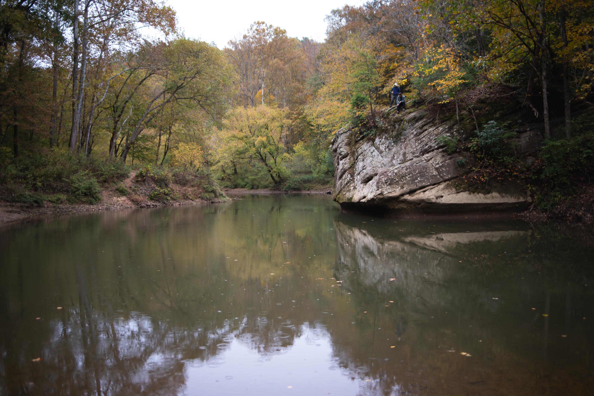

Princess Arch Contour Map
University of Kentucky Geography
Legend
Arches
Arches extracted from the Domestic and Antarctic Names (State and Topical Gazetteer) published by the United States Board on Geographic Namkes. (geonames.usgs.gov) Data accessed December, 2019. Elevation data was extract from lidar point cloud data maintained by Kentucky's Elevation Data & Aerial Photography Program (KyFromAbove)
Princess Arch is located within the Red River Gorge in eastern Kentucky. A 0.6 mile trail off Chimney Top Rd near Stanton, KY will take you to this arch which is made out of Pennsylvanian Sandstone.
Tools used in this project
- ArcGIS Pro was used to process lidar data and produce elevation derivatives.
- Data is shown on Mapbox web map with geolocation services enabled.
Photographs from October field trip

Courthouse Rock

Jump Rock

View on Auxier Ridge

Princess Arch on MyHikes.org, Source
Maps of Courthouse Rock
3D map point cloud rendered in Potree, Click to enlarge
Estimated cliff heights around Courthouse Rock, Click to enlarge
{kind=link}